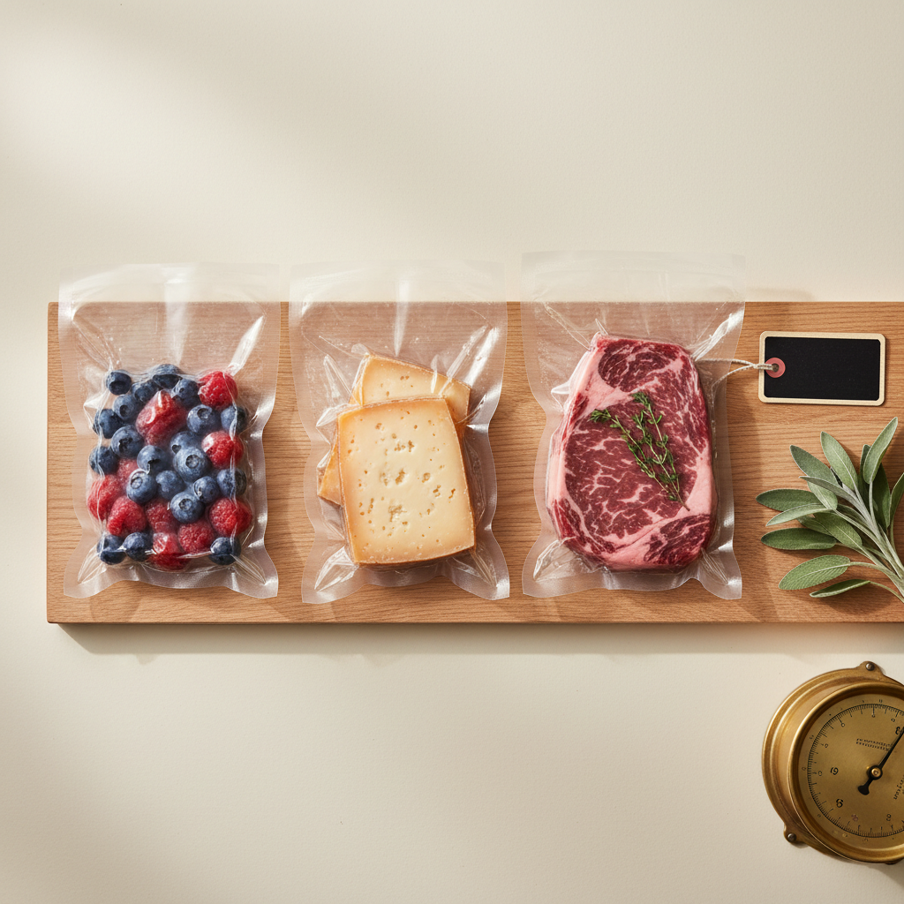
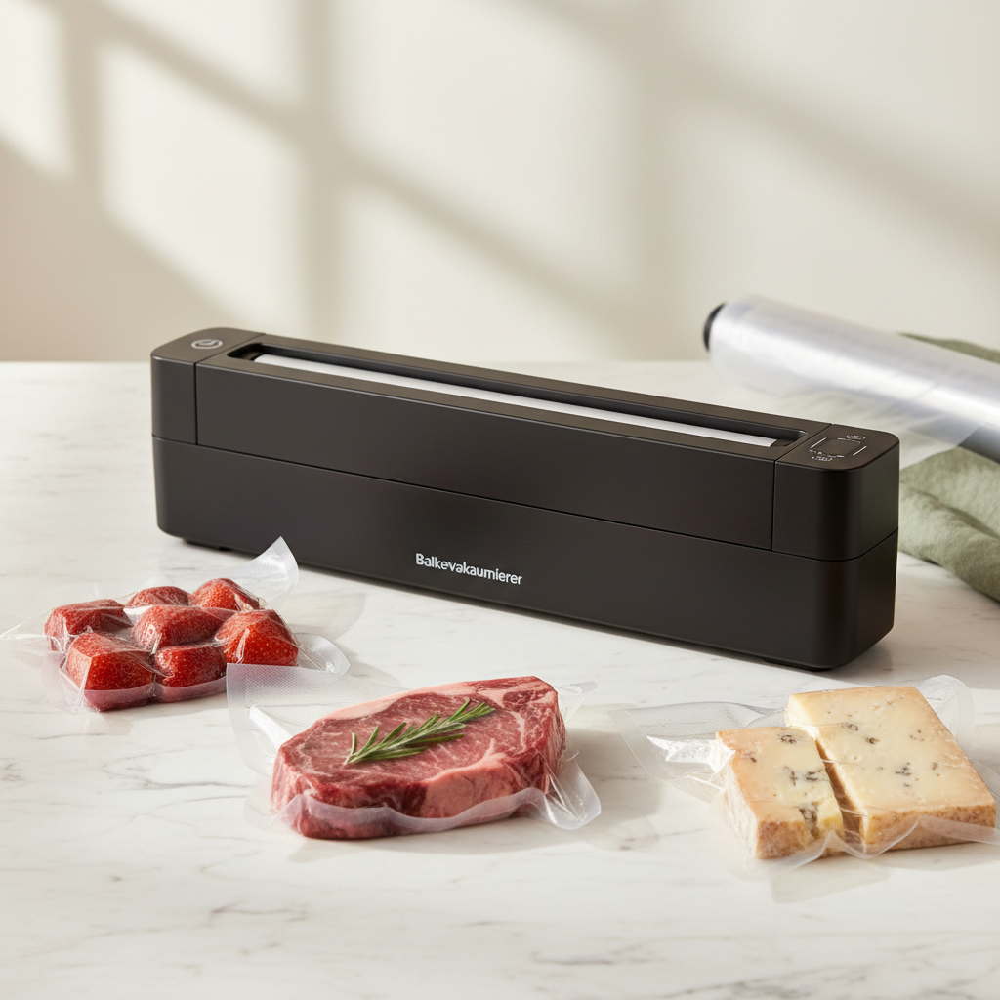
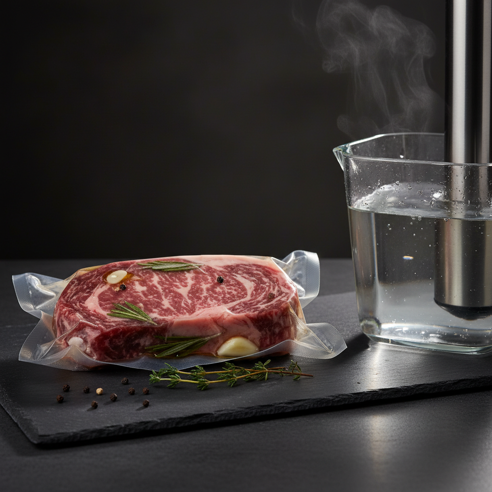
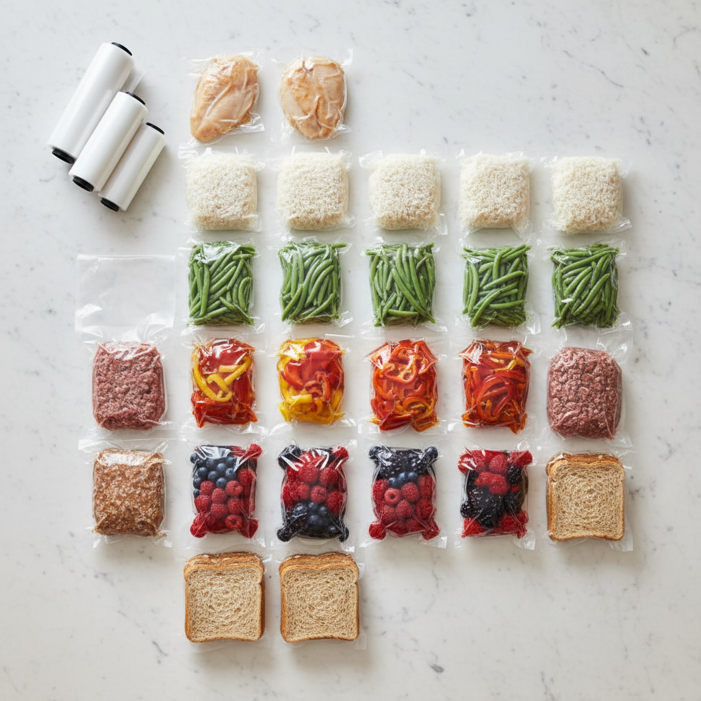
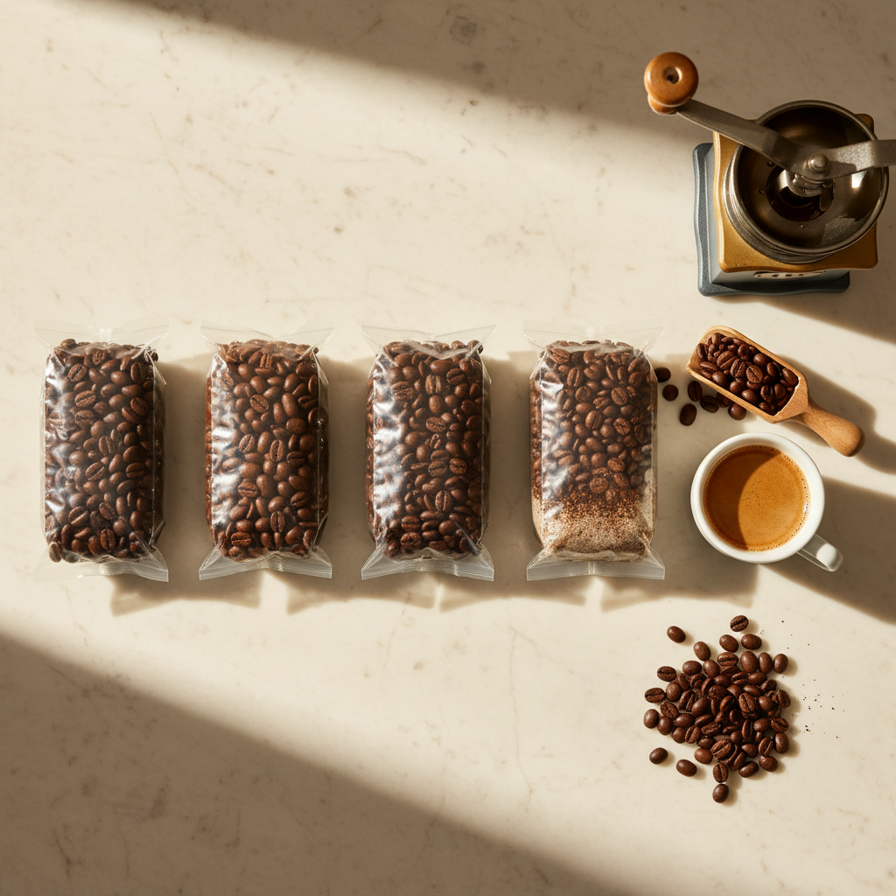
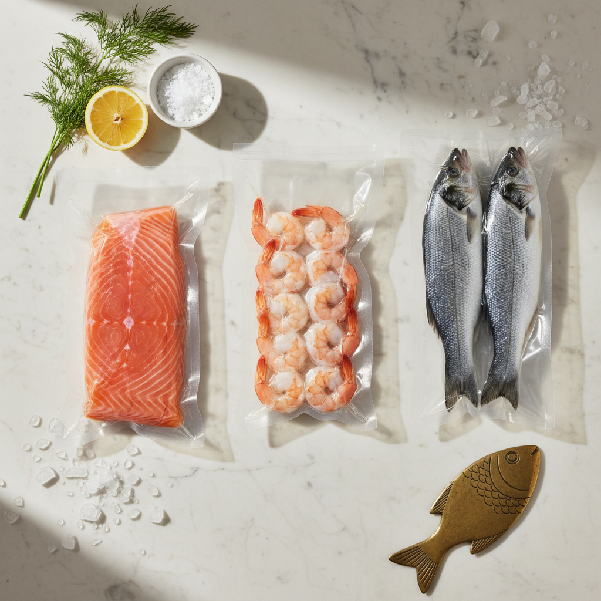
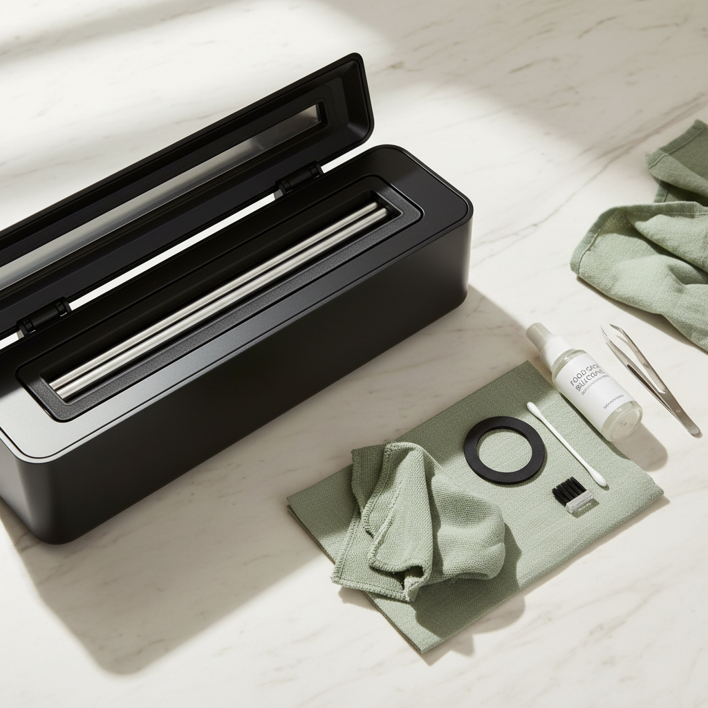
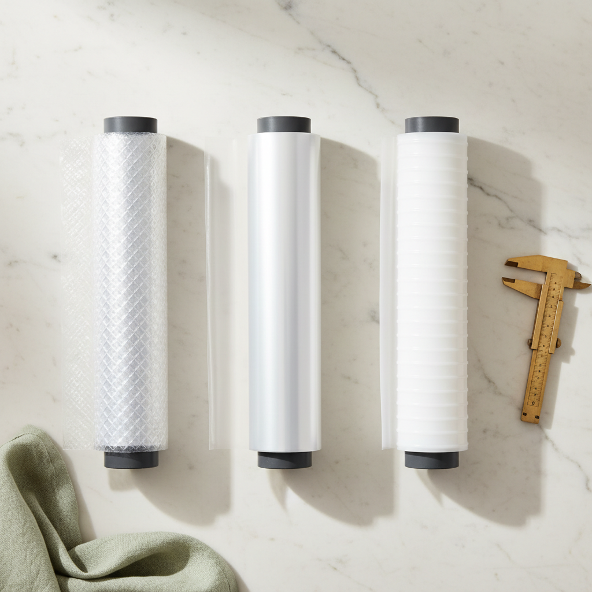

Frische
3 bis 5 Mal länger frisch — was Vakuumieren wirklich bewirkt
Mit Tabelle: Wie lange Beeren, Fleisch, Käse, Brot, Kaffee mit und ohne Vakuum halten — und welche Lebensmittel Ausnahmen sind.
Mehr Haltbarkeit. Bessere Aromen. Weniger Müll. Weniger Geld aus dem Fenster geworfen. Drei Ratgeber, mit denen du in einer Woche merkst, warum sich der Folienvakuumierer oder Balkenvakuumierer auf deiner Arbeitsplatte rentiert.


Mit Tabelle: Wie lange Beeren, Fleisch, Käse, Brot, Kaffee mit und ohne Vakuum halten — und welche Lebensmittel Ausnahmen sind.

Warum Vakuumieren Marinaden in 30 Minuten statt 12 Stunden ins Fleisch bringt — und wie du Sous-Vide ohne Profi-Equipment machst.

Wie eine vierköpfige Familie 60–90 € pro Monat spart und gleichzeitig die Bio-Tonne halbiert. Mit konkreten Beispielen.

Offene Tüte vs. luftdichte Dose vs. Vakuumbeutel: konkrete Aroma-Bewertung über 6 Monate.

Mit Temperatur-Tabelle: Wie sechs klassische Desserts im Wasserbad perfekt gelingen — inklusive Tutorial-Video.

Wie lange Fisch vakuumiert hält, was bei Histamin, Anisakis und Listerien zu beachten ist — Praxis-Tabelle pro Fischart.

Schweißbalken, Dichtungen, Pumpe: Wartungsplan mit Intervall-Tabelle und konkreten Routinen für ein langes Gerätleben.

Welche Folie passt zu welchem Gerät? Vergleich der drei wichtigsten Folientypen mit Tabelle und Praxis-Tipps.
Für 95 % aller Haushalte ist ein Balkenvakuumierer die richtige Wahl: stärkere Pumpe, dichtet zuverlässiger, kommt mit feuchten Lebensmitteln klar und arbeitet mit günstigen Standard-Folienrollen. Folien-Vakuumierer (Hand- oder Stab-Geräte) sind nur sinnvoll als Zweitgerät für unterwegs, fürs Wieder-Vakuumieren bereits geöffneter Zip-Beutel oder bei extrem wenig Platz.
Nein. Frische weiche Pilze, frischer Knoblauch und frische Zwiebeln bilden im Vakuum potenziell Botulinum-Sporen-freundliche Bedingungen — diese gehören vorher gegart oder eingefroren. Auch frische Erdbeeren werden zerquetscht, wenn man sie nicht vorher kurz schockgefriert. Käse mit Schimmelkultur (Camembert, Roquefort) braucht Restluft. Mehr dazu in unserem Frische-Artikel.
Solider Balkenvakuumierer fürs erste Jahr: 80–140 €. Folienrollen (28 cm × 6 m, geprägt): rund 1,80 € pro Meter, je Beutel 5–15 Cent. Wer regelmäßig Fleisch portionsweise einfriert, hat das Gerät statistisch nach 4–7 Monaten amortisiert — siehe Spar-Rechnung.
Geprägte Vakuumierfolien (PA/PE) sind in der EU als lebensmittelechte Verpackung zugelassen, BPA-frei und sous-vide-tauglich bis ca. 95 °C. Für Mikrowelle und Tiefkühler beide Symbole auf der Verpackung prüfen — die meisten guten Marken sind beides.